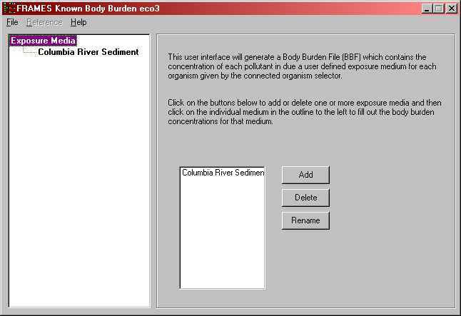
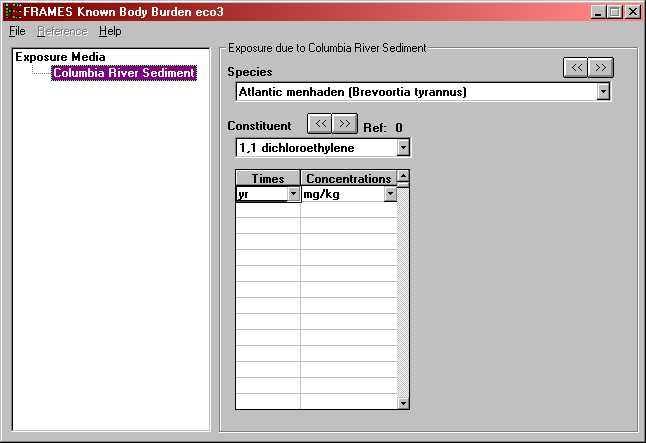

Use this module only if you know the constituent body burden concentrations for aquatic biota. The constituent body burden concentrations, at user provided points in time and media, are entered directly through the interface. This module does not compute the ingrowth of progeny because the user is assumed to know everything about the source, including progeny concentrations. Therefore, this module assumes that the progeny emissions are input along with the parent concentrations.
For more information about the file specification that this module produces see BBF Specifications on the FRAMES web site.
BBF Boundary Condition Parameters
Exposure Medium
The user is required to give a name to the exposure medium. Any number of exposure media are acceptable. Click the add button to add an exposure medium. The medium should be applicable to aquatic biota. To delete a medium select the desired medium in the listbox and click the delete key. To rename a medium select the desired medium and click the rename button, then enter the new name. Note: All names must be unique.

Fig: Exposure Media
Species
A list of species is defined in the Eco Aquatic Benchmarks Database. Each of the species selected in the Eco Aquatic Benchmarks Database appears in Species drop-down box. In the example case, shown in the following figure, the species that has been selected for analysis is Brachionus Calicyflorus (Rotifer). Use the drop down box or the « » buttons to select the next species. Both the common and scientific names appear on the menu. Enter a concentration, time series for each usage location, species and constituent combination.
Constituent
The list of constituents is identified by a 'Constituent' database module. Each of the constituents selected for analysis in the 'Constituent' module appears in this drop-down box. Use the drop down-box or the « » buttons to make differeent constituent selections. As a new selection is made the spreadsheet closest to the drop-down box is updated with the appropriate time series. If the constituent has progeny then an identical set of controls will appear. The progeny will be displayed as the parent is displayed but only those progeny that relate to the displayed parent are available for data entry.
Time
Units: yr (year)
Range: Greater than or equal to 0
A minimum of two times must be entered. Times must be entered in chronological, ascending order (i.e., 0, 5, 10 not 0, 10, 5). The spreadsheet rows must be used consecutively. Anything below a skipped time row will be deleted. A point in time at which a measurement/estimate is given should be relative to all other times entered in the interface and the overall simulation.
Concentration
Units: mg/kg or pCi/kg
Range: Greater than or equal to 0
Items left blank in rows that have a valid time defined are filled with zeros. All rows after and including the first row with an invalid time are ignored and cleared.

Fig: Constituent